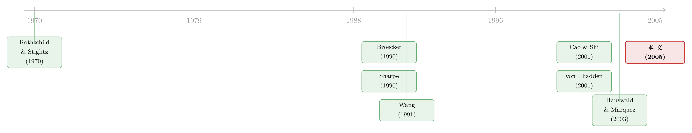

信贷市场的「火眼金睛」：筛进与筛出，是两种完全不同的本事
本文读的是 Banerjee (2005, Review of Financial Studies)：一项「风险评估技术」其实有两副面孔——把好项目「筛进来」(screen in) 和把坏项目「筛出去」(screen out)。这两种本事对银行采用新技术的激励、以及银行之间的信息外部性，有着截然相反的影响：筛出能力的提升会带来策略互补与多重均衡，筛进能力的提升却带来策略替代与不对称均衡；而技术「质量的不确定性」究竟是抬高还是压低采用激励，也完全取决于这份不确定性挂在哪一侧。
1 一个被默认了几十年的「对称」假设
先讲一个几乎所有人都见过、却几乎没有人停下来追问的设定。
当我们说一家银行用一套「征信技术」给借款人打分时，这套技术总会犯两类错误：把本该放贷的好项目误判成坏的（漏掉了它），或者把本该拒绝的坏项目误判成好的（放进来了）。用假设检验的语言说，前者对应 第一类错误 (Type I error)，后者对应 第二类错误 (Type II error)。
几乎所有研究信贷市场信息的模型，都默默地假定这两类错误的水平是一样的——一套技术「更精确」，就意味着两类错误同时同比例地下降。这听上去无伤大雅，但仔细想想，凭什么？一套新的信用评分系统，完全可能特别擅长「认出好人」，却在「揪出坏人」上乏善可陈；反过来也一样。这两件事在统计上是两个独立的旋钮，没有任何先验理由要求它们齐步走。
Banerjee (2005) 做的第一件事，就是把这两个旋钮拆开。他给任意一套测试技术定义了两个属性：
- 筛进精度 (screening in precision)，记作 \(p_H\)：把真正的好项目（H 型）正确归入「合格」类别 \(h\) 的概率。\(p_H\) 越高越好——它对应着 \(1-p_H\) 这个第一类错误。
- 筛出精度 (screening out precision)，记作 \(p_L\)：把真正的坏项目（L 型）误判为「合格」的概率。\(p_L\) 越低越好——它本身就对应着第二类错误。
记住一个反直觉的符号约定：\(p_H\) 是「越大越好」的好本事，\(p_L\) 是「越小越好」的坏漏洞。整篇文章的张力，都来自这两个量在数学上扮演的不对称角色。
接着，一个自然的问题是：既然把两类错误拆开了，那它们对银行「要不要花钱买更好的技术」这件事的影响，会一样吗？
这篇文章的全部精彩，就在于回答「不一样，而且是反着来的」。
2 模型设定：一场双寡头的「暗标」博弈
我们先把舞台搭起来。市场上有连续统 $[0,1]$ 的风险中性企业，每家手里攥着一个需要 1 单位外部资金的不可分项目。项目分两型：H 型成功后产出 \(x>0\)，L 型产出 0。事前任一项目是 H 型的概率为 \(\gamma\in(0,1)\)，且企业自己也不知道自己是哪一型。
两家风险中性的银行（资金机会成本为 0）竞争放贷。游戏分三阶段：
- Stage I（技术选择）：两家银行同时、不可逆、非合作地选一套测试技术。便宜的成熟技术 \(T_c\) 成本为 0；昂贵的优越技术 \(T_e\) 成本为 \(e>0\)，沉没。
- Stage II（不确定性揭晓）：一个随机变量 \(W\)（取值于 $[0,1]$，分布 \(G\)，\(E(W)>0,\,V(W)>0\)）实现为 \(w\)，同时各家的技术选择变成公开信息。
- Stage III（利率竞争）：每家银行对自己评为 \(h\) 的企业报一个利率、拒掉评为 \(l\) 的企业。企业拿到报价后接受最低的那一个（只要收益非负）。
这里有两处设定是整个故事的命门，值得停下来咂摸：
第一，两套技术的精度差异。 成熟技术 \(T_c\) 的精度是确定已知的：\(p_{Hc}=p_H\)、\(p_{Lc}=p_L\)。而优越技术 \(T_e\) 的精度是随机变量 \(w\) 的函数：
$$p_{He}(w) = p_H(1+\alpha_H w),\qquad p_{Le}(w) = p_L(1-\alpha_L w)$$
其中 \(0\le \alpha_H < (1-p_H)/p_H\)、\(0\le \alpha_L <1\)。\(\alpha_H\) 衡量优越技术在筛进上比成熟技术强多少，\(\alpha_L\) 衡量它在筛出上强多少。注意：\(p_{He}\ge p_{Hc}\)（筛进更好），\(p_{Le}\le p_{Lc}\)（筛出更好）。
第二，质量的不确定性。 在 Stage I 做技术选择时，\(T_c\) 的好处是「精确已知」的，而 \(T_e\) 的确切质量 \(w\) 还没有揭晓。这正是新技术的本质：你知道它「更好」，但好到什么程度，要等装上去、磨合一阵、市场成熟之后才知道。\(W\) 的方差 \(V(W)\) 就度量了这份「质量不确定性」。
这两点合起来，把一个看似平淡的技术采用问题，变成了一场带不确定性的暗标博弈：你今天要不要砸钱 \(e\) 去买一套「大概更好、但好多少说不准」的技术，而对手也在同时做同样的决定，且你们谁也看不见对方的报价和拒贷决定。
3 先解利率子博弈：为什么纯策略均衡不存在？
要分析 Stage I 的技术选择，得先知道任何一组技术选定之后，Stage III 的利率竞争会打成什么样。
这里有一个经典而漂亮的结论：纯策略利率均衡不存在。逻辑是这样的——如果两家都报同一个利率，那么任何一家都有动机把自己的利率往下压一丁点：因为报价更低的那家会抢到更好的借款人池子（平均成功率更高），它就更愿意压价；可一旦压到比对方低，对方拿到的就全是「被你拒了才来找它」的次品池子，里面 L 型扎堆。于是双方陷入一场谁也停不下来的降价拉锯。但与此同时，给定自己的池子，利率越高利润越高——这两股力量一拉扯，纯策略就崩了。
这正是信贷市场里的 赢者诅咒 (winner's curse)：你「赢」到一个客户，恰恰因为对手「看不上」它。这种诅咒之所以存在，是因为测试不完美、且两家的测试在统计上不完全相同，谁也观察不到对方的拒贷决定。Broecker (1990) 和 Wang (1991) 最早在这类离散私有信息博弈里点出了纯策略均衡的不存在。
纯策略没了，混合策略接上。在对称技术选择下（两家都选 \(T_k\)，\(k\in\{c,e\}\)），Proposition 1 给出唯一的对称混合策略均衡，每家银行的期望利润是：
这个式子的结构出奇地干净，值得用一句话记住它：银行赚的，是所有「被自己接下、却被对手拒掉」的好项目的净产出；亏的，是所有「被自己接下、却被对手拒掉」的坏项目的本金。「被对手拒掉」这件事之所以反复出现，正是因为只有对手不要、落到你手里的那部分，才真正决定了你的边际盈亏——赢者诅咒被原原本本地写进了利润函数。
为完整起见，均衡里银行从区间 \(R_{kk}(w)=[r^0_{kk}(w),\,x]\) 中随机报价，下界为
$$r^0_{kk}(w) = 1 + [1-p_{Hk}(w)](x-1) + \frac{(1-\gamma)\,p_{Lk}^2(w)}{\gamma\, p_{Hk}(w)}$$
报价分布函数为
$$F_{kk}(r;w) = \frac{\gamma\, p_{Hk}(w)\big[(r-1)-(1-p_{Hk}(w))(x-1)\big] - (1-\gamma)\,p_{Lk}^2(w)}{\gamma\, p_{Hk}^2(w)(r-1) - (1-\gamma)\,p_{Lk}^2(w)}$$
当两家技术选择不对称时（一家 \(T_c\)、一家 \(T_e\)），Proposition 2 同样给出唯一均衡。其中信息更优的那家银行（选了 \(T_e\)）的利润是
$$u_{ec}(w) = \gamma\, p_{He}(w)(1-p_{Hc})(x-1) - (1-\gamma)\,p_{Le}(w)(1-p_{Lc})$$
注意它的结构：好客户那一项里，自己的筛进精度 \(p_{He}(w)\) 在前、对手的「拒绝率」\((1-p_{Hc})\) 在后；坏客户那一项里，自己的漏判 \(p_{Le}(w)\) 配对手的「拒绝率」\((1-p_{Lc})\)。这种「我的精度 × 对手的决定」的乘积形态，正是信息外部性的数学化身——下一节的全部反转，都从这里长出来。
4 真正关键的一步：两种本事，两种外部性
现在到了全文的心脏。Banerjee 的做法是把两种本事分开研究：第 3 节只让两套技术在筛出上有差别（令 \(\alpha_H=0,\ \alpha_L>0\)），第 4 节只让它们在筛进上有差别（令 \(\alpha_L=0,\ \alpha_H>0\)）。结果是一组漂亮的二分。
情形一：差异在「筛出」。 假设优越技术的好处，全在于更善于把坏项目挡在门外。此时一家银行升级技术，会对另一家产生正向的外部性传导，使得「我升级的激励，随着对手升级而上升」——也就是 策略互补 (strategic complementarity)。于是可能出现多重对称纯策略均衡：要么两家都不升级，要么两家都升级。更耐人寻味的是，当两个均衡并存时，比较下来会发现：两家都升级时，银行反而更糟（利润更低），但市场的平均利率更低——技术军备竞赛把租金竞争掉了，好处落到了借款人头上。
情形二：差异在「筛进」。 假设优越技术的好处，全在于更善于把好项目认出来。这时方向反转：一家银行升级，会降低另一家升级的激励——「我升级的激励，随着对手升级而下降」，即 策略替代 (strategic substitution)。在一定参数下，这会催生不对称纯策略均衡：一家采用优越技术、另一家固守落后技术。市场自发地分化成「先进行」与「跟随者」，而不是齐步走。
为什么同一个「升级」动作，挂在不同的本事上，外部性的符号会反过来？直觉在于这两种本事改变的是池子的不同侧面。当你更善于「筛出」坏项目时，你拒掉的坏项目会被推给对手，恶化对手的池子，逼着对手也不得不靠升级来自保——互补。而当你更善于「筛进」好项目时，你把好项目更牢地攥在自己手里，对手能抢到的好客户变少，它再花钱升级的边际回报也就被你吃掉了——替代。
这个二分的政策含义很扎心：人们常说「更广泛地采用更好的信息技术会改善信贷配置、让借款人受益」。但这篇文章告诉你，采用与否，关键取决于新技术的优越性具体落在哪一侧。如果新技术主要强在「筛进」，市场很可能停在「只有一家升级」的不对称均衡上，整体采用率被策略替代死死压住——好技术未必会被普遍采用。
（关于「信息这件武器在信贷竞争里如何反噬持有者」的另一种刻画，可参见《信息这把武器，为什么越磨越亏？——把「螺旋桨」装进信贷竞争》；而关于「更先进的 IT 未必带来更激烈竞争」的实证与理论讨论，可参见《两种技术，两种命运》。)
5 于是反转再来一次：不确定性的「凸性」秘密
如果说上一节已经够反直觉了，那么不确定性这一节会把同样的二分再演一遍——而且这次的钥匙是一个纯数学的概念：凸性。
先问一个问题：银行是风险中性的，为什么「质量的不确定性」还会影响它的决策？风险中性的人不是只看期望吗？
答案在于：技术选择的激励，是关于质量实现 \(w\) 的一个非线性函数。而当你对一个非线性函数取期望时，詹森不等式 (Jensen's inequality) 就开始说话了。具体地，把不确定性的上升理解为对 \(W\) 做一次均值保持的展形 (mean-preserving spread)（这正是 Rothschild & Stiglitz (1970) 定义「风险增加」的方式）：
- 如果采用激励是 \(w\) 的凸函数，那么展形后期望激励上升；
- 如果是凹函数，则期望激励下降。
而 Banerjee 证明的，恰恰又是一组二分：
- 差异在筛出时，采用激励对 \(w\) 是凸的 → 更大的不确定性，反而抬高了采用昂贵技术的激励。
- 差异在筛进时，采用激励对 \(w\) 是凹的 → 更大的不确定性，压低了采用激励。
换句话说，「质量越说不清，越该买」还是「越说不清，越不该买」，没有统一答案——它取决于这份不确定性究竟挂在「筛进」还是「筛出」上。而这一切之所以成立，根子还是在第 4 节那个信息外部性的符号：两种本事对外部性的相反作用，最终塑造了激励函数对 \(w\) 的相反曲率。这是一条从「外部性符号」一路贯穿到「不确定性效应符号」的完整因果链，全文的核心张力至此被推到了头。
6 文献脉络
把这篇文章放回它生长的土壤里看，会更清楚它的位置。
最上游是 Rothschild & Stiglitz (1970) 关于「风险增加」的定义——它给了本文分析不确定性效应的数学语言（凸/凹 + 均值保持展形）。在信贷市场这一支，Broecker (1990) 是开山之作：他第一次研究了银行用独立测试做信用甄别时的同业竞争，并指出纯策略均衡不存在、混合策略里藏着赢者诅咒——但他只研究对称银行，且不允许内生的信息获取。Wang (1991) 在离散私有信息的共同价值拍卖里平行地刻画了同一种非存在性。

接着，关于「不对称银行竞争」的一支由 Sharpe (1990) 开启、由 von Thadden (2001) 在赢者诅咒的框架下精炼：信息更优的「内部银行」会在产出 \(x\) 处放一个原子、在 \(x\) 以下连续报价，外部银行则在 \(x\) 以下无原子地报价。Banerjee 的不对称均衡（Proposition 2）形态上与之神似，但有一处根本差别：在 von Thadden 那里，信息劣势银行的信号是优势银行信号的 Blackwell 退化 (garbling)；而在本文里，两家只是精度不同、信号条件独立——假设之差导出了结果之差。
然后是与本文最近的「内生信息获取 + 竞争」一支：Cao & Shi (2001) 表明竞争加剧反而减少信息获取、进而压低信贷可得性（但他们让银行隐蔽地选精度，本质上是对称博弈）；Hauswald & Marquez (2002, 2003) 则区分了技术进步的两个侧面——信息处理与信息外溢，指出前者会通过加剧信息不对称而抑制竞争。Boadway & Sato (1999) 与 Banerjee (2004) 也研究了带外溢的信息获取。
本文所处的位置，是把以上几支缝在一起又往前推了一步：它在一个内生信息获取的双寡头里，第一次（据作者所知）同时引入了「两类错误的分离」与「技术质量的不确定性」，并证明这两件被前人合并或忽略的事，恰恰是决定采用激励的关键。
评论与延伸（Q&A + 研究方向）
(a) 几个可能的疑问
Q：「筛进」和「筛出」听起来只是同一件事的两面，凭什么是两个独立的旋钮？
因为它们对应假设检验里两类逻辑独立的错误：\(1-p_H\) 是第一类错误（弃真），\(p_L\) 是第二类错误（取伪）。一套技术完全可以在认人准（高 \(p_H\)）的同时漏人多（高 \(p_L\)），反之亦然。现实里，擅长「认出优质客户」的信用模型，未必擅长「揪出欺诈」，这正是把两者拆开的现实依据。
Q：银行明明是风险中性的，为什么质量的不确定性还会改变它的选择？
关键不在风险偏好，而在激励函数对质量 \(w\) 的非线性。风险中性意味着银行只看期望，但当激励是 \(w\) 的凸（或凹）函数时，对 \(w\) 取期望就会因詹森不等式而被方差影响。所以不确定性的效应是经由「凸性」而非「风险厌恶」进入的——这也是本文一个被反复强调的卖点。
Q：为什么两家都升级到优越技术，反而比都不升级时利润更低？
因为技术升级在「筛出」情形下是策略互补的军备竞赛：双方都变强后，赢者诅咒被缓解、报价区间被压低，竞争把租金竞争掉了，平均利率下降——好处转移给了借款人，银行的利润反被侵蚀，还要承担成本 \(e\)。这是典型的「囚徒困境式」过度投资。
Q：不对称均衡（一家先进、一家落后）真的稳健吗，会不会只是参数特例？
它确实只在「差异主要在筛进」且落在特定参数区间时出现，并非普遍结论。但它的意义在于定性地说明：策略替代会内生地把市场分化成先进者与跟随者，而不是齐步升级。这对「新技术会被普遍采用」的乐观预期是一个理论上的警告。
Q：这套结论和「关系型银行」那条线有什么关系？
本文是交易型、匿名报价的框架，信息来自一次性测试而非长期关系。它与关系型银行（靠重复互动积累软信息）是互补而非替代的视角。把「关系」这条暗线算进一国信贷总账的做法，可参见《银行为什么舍得先亏本拉客？》。
Q：模型用混合策略均衡，这在信贷市场里可信吗？
作者自己也承认混合策略的解释不总是清楚。但他给出的辩护是：合约报价并非公开宣布，因此「报价分布」可以被理解为银行面对不可观测对手时的真实随机化行为。考虑到纯策略在此类博弈中根本不存在，混合策略是不得不接受的均衡概念。
(b) 几个可能的研究问题与提案
1. 把「两类错误的分离」拿到数据里去量。 【经济故事】本文最锋利的洞见是筛进 vs 筛出的不对称，但它停留在理论。一套真实的信用评分技术（比如某家银行新上线的 ML 风控模型），其第一类错误率（拒掉的好客户）与第二类错误率（放进来的坏账）是可以分别估计的。两者的相对变化，应当能预测同业的技术采用行为。 【可行性】中。需要银行层面的贷款审批 + 事后违约数据（如某国征信局微观数据或单家银行内部数据），并能定位一次技术升级事件做事件研究。难点在于把「升级落在筛进还是筛出」清晰地分类，识别上可借助升级前后误判结构的变化。
2. 技术采用的策略互补 / 替代的实证检验。 【经济故事】模型预言：当新技术主要强在筛出时，银行的采用决策互补（一起上）；强在筛进时则替代（分化）。这意味着在同一地理市场里，竞争对手的采用行为对自己采用概率的影响符号应随技术类型而变。 【可行性】中。可用美国小银行采用信用评分的时间差（Frame, Padhi & Woolsey 2001 的数据传统）+ 局部市场（如县级）竞争结构，估计「对手采用 → 自己采用」的反应函数，看其符号是否随技术属性切换。识别上需用对手采用的工具变量（如对手的母公司层面冲击）。
3. 把这套机制搬到公司债 / 信用评级市场。 【经济故事】评级机构同样面对「筛进（认出优质发行人）」与「筛出（识别隐藏风险）」两种本事，且评级技术升级（如引入新模型）也带质量不确定性。本文的二分能否解释评级机构在不同细分市场（投资级 vs 高收益）采用新方法的差异？ 【可行性】中偏低。评级机构数目少、技术升级不透明，干净的识别困难；但可作为定性框架，配合评级迁移矩阵里第一类 / 第二类错误的代理变量做描述性证据。
4. 外资放贷人进入与「筛进 / 筛出」的错配。 【经济故事】外资银行进入新兴市场时，常被认为「认不准本地好客户」（筛进弱）但「风控模型严」（筛出强）。本文预测：若外资的优势主要在筛出，会与本地银行形成策略互补、共同抬高采用；若劣势在筛进，则可能停在不对称均衡、长期被边缘化。 【可行性】中。可用跨国银行进入事件 + 东道国信贷市场数据，区分外资行在两类错误上的相对表现，检验其与本地行技术采用的互补 / 替代关系。数据可得性是主要约束。
参考文献
- Banerjee, P. (2005). Information Acquisition Under Uncertainty in Credit Markets. Review of Financial Studies 18(3), 1075–1104.
- Broecker, T. (1990). Credit-Worthiness Tests and Interbank Competition. Econometrica 58(2), 429–452.
- Cao, M., and S. Shi (2001). Screening, Bidding and the Loan Market Tightness. European Finance Review 5(1–2), 21–61.
- Hauswald, R., and R. Marquez (2003). Information Technology and Financial Services Competition. Review of Financial Studies 16(3), 921–948.
- Rothschild, M., and J. Stiglitz (1970). Increasing Risk: I. A Definition. Journal of Economic Theory 2(3), 225–243.
- Sharpe, S. A. (1990). Asymmetric Information, Bank Lending and Implicit Contracts: A Stylized Model of Customer Relationships. Journal of Finance 45(4), 1069–1087.
- von Thadden, E.-L. (2001). Asymmetric Information, Bank Lending and Implicit Contracts: The Winner's Curse. Working paper, Université de Lausanne.
- Wang, R. (1991). Common-Value Auctions with Discrete Private Information. Journal of Economic Theory 54(2), 429–447.
我的判断是：这篇文章的贡献清晰而锋利——它用一个极简的双寡头模型，证明了一件被整条文献默认了几十年的「对称」假设其实抹掉了真正重要的结构。「筛进 / 筛出」的二分不是技术细节，而是决定外部性符号、进而决定采用激励、乃至不确定性效应方向的总开关；把它和「质量不确定性 + 风险中性下仍受方差影响」缝在一起，是干净漂亮的理论增量。对识别（这里是理论结果的稳健性）的担忧有三：其一，多重均衡与不对称均衡都只在特定参数区间出现，模型对均衡选择保持沉默，因此「会停在哪个均衡」是悬而未决的；其二，全文靠混合策略均衡支撑，其行为可信度依赖「报价不可观测」这一假设，一旦市场透明度提高，机制就可能失效；其三，只有两种离散技术、只有两家银行——作者自己也承认连续技术与多家竞争的推广「不那么 tractable」，结论能否扩展存疑。后续最想看到的，是有人把「两类错误分离」真正拿到贷款层面的微观数据里去量，并检验「对手采用 → 自己采用」的反应函数符号是否真的随技术属性在互补与替代之间切换——这是把一个优雅理论钉到现实上的最直接一步。